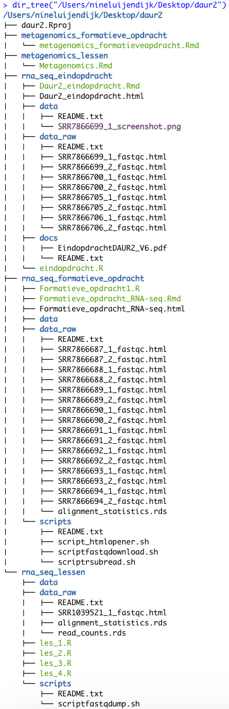

1 Guerilla Analytics framework
To keep my data manageable I use the Guerilla Analytics framework (Ridge 2014). This means I make sure every project has its own folder, every folder that needs it has a README and no raw data file is altered. I also make sure to version control my code using GitHub
The way I manage my data is visible in the tree below:
dir_tree("/Users/nineluijendijk/Desktop/daur2")knitr::include_graphics(here("data/screenshot_dirtree.png"))
References
Ridge, Enda. 2014. “Guerrilla Analytics - 1st Edition.” 2014. https://www.elsevier.com/books/T/A/9780128002186.